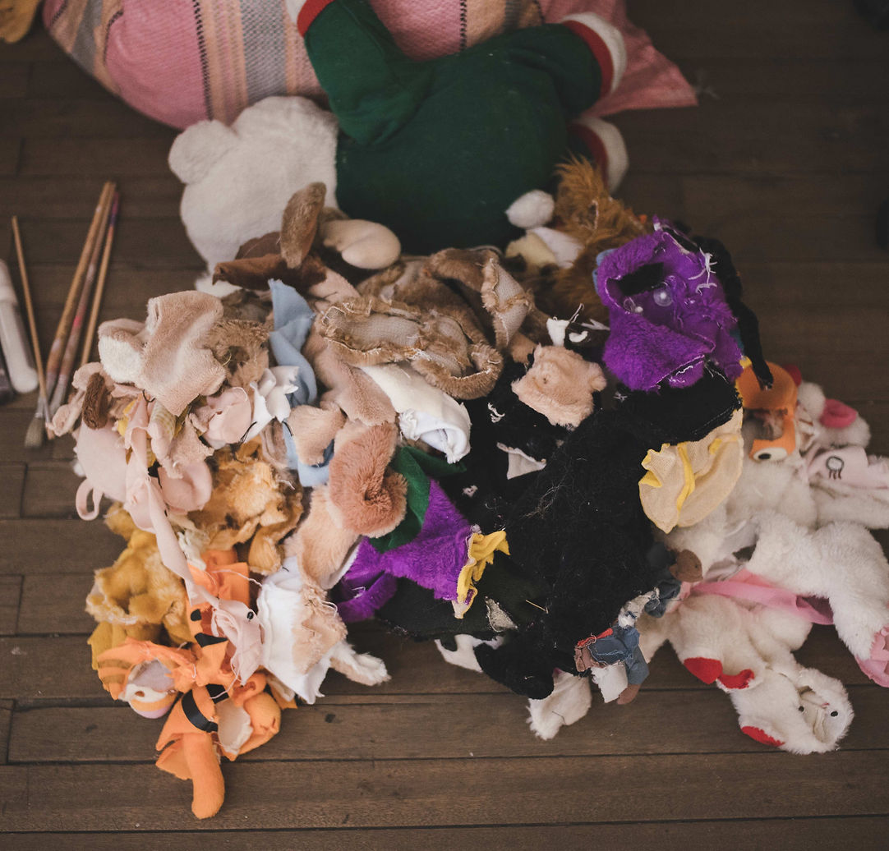
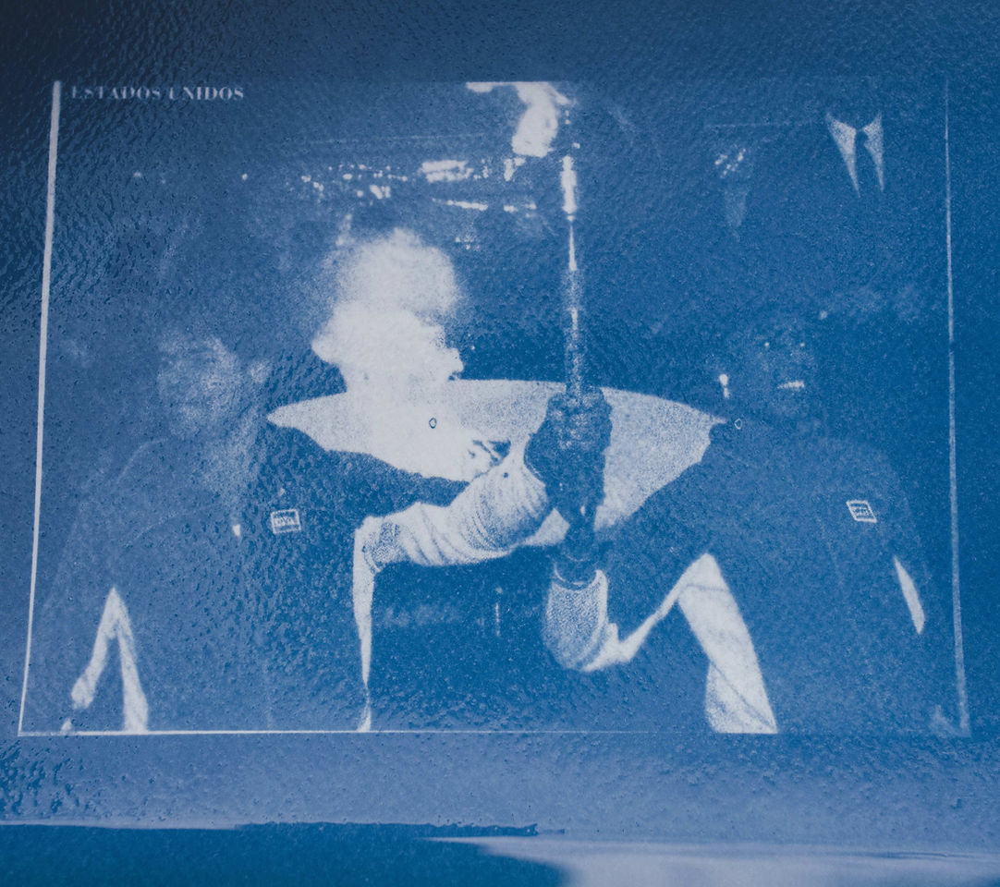
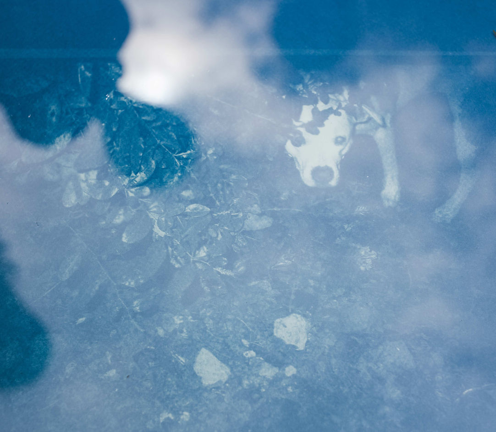
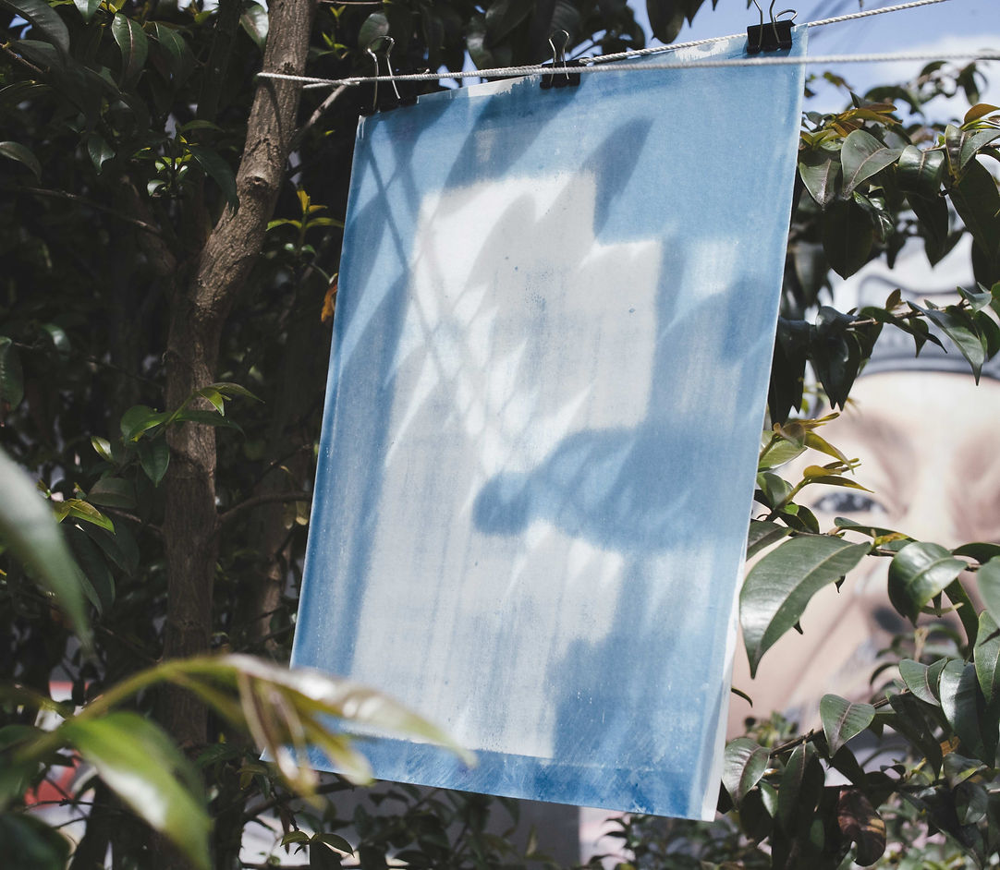
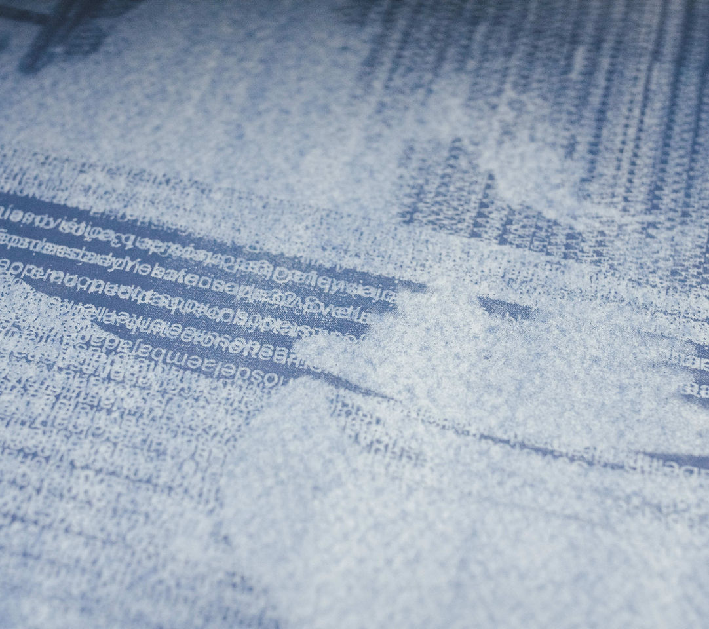
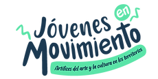
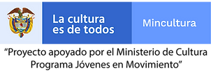

señales
COLECTIVO DESTELLO
Sofía Lozano
Juan Andrés Herrera
Sergio Quiroga
Beca otorgada por el Ministerio de Cultura
Jóvenes en Movimiento 2021
Una señal es un signo, un gesto u otro tipo de indicación o aviso de algo. Interpretamos señales cuando establecemos comunicación con otra persona y logramos entender lo que ese gesto significa. Las señales pueden involucrar aparatos, luces intermitentes, gestos con las manos, los brazos u otras partes del cuerpo, y existen con el propósito de avisar, alertar o indicar.
En este proyecto planteamos señales que sirvieran para cada día, durante el lapso de tres laboratorios, estableciendo un diálogo a partir de los materiales, los asistentes y la situación o el tema que buscáramos explorar en ese día. En este sentido, creamos objetos, algunos de carácter efímero, con el propósito de captar la atención de alguien e intentar comunicarle algo.
"Señales" se desarrolló entre los días 30 de noviembre y 7 de diciembre de 2021, en “Más Allá” , Bogotá y sus alrededores. Se llevaron a cabo 8 sesiones de los tres laboratorios a las que asistieron personas curiosas e interesadas en explorar, a través de la creación colectiva, conceptos relacionados con el cuerpo, el disfraz, la levedad y la aparición de una imagen mediante una técnica de impresión análoga (cianotipia). Las fotografías mostradas aquí son el resultado de estos ejercicios.

SEÑAL 1. Hacer cosas para desaparecer.
30 noviembre - 3 diciembre.

SEÑAL 2. Juguemos en el bosque.
2, 7 diciembre.

SEÑAL 3. Inventario a través de Cianotipia, impresión análoga.
1 - 4 diciembre.

SEÑAL 3. Inventario a través de Cianotipia, impresión análoga.
1 - 4 diciembre.

SEÑAL 3. Inventario a través de Cianotipia, impresión análoga.
1 - 4 diciembre.

SEÑAL 3. Inventario a través de Cianotipia, impresión análoga.
1 - 4 diciembre.
Fotografía: Juan Camilo Forero.
Colaboración: Maria José Espejo.
Proyecto apoyado por el Ministerio de Cultura.
Programa Jóvenes en Movimiento / 2021.

